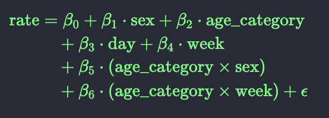

final-project
Assessing Excess Mortality in Puerto Rico During Hurricane Maria
Abstract
Hurricane Maria resulted in widespread destruction of land, infrastructure, and resources across Puerto Rico when it made landfall in September 2017. Estimates of the death toll currently range from 1,400 to nearly 5,000 deaths, but the official death toll reported by the Puerto Rican government remained stubbornly low for many months after the hurricane. This project attempts to statistically analyze Puerto Rico’s Department of Health Demographic Registry mortality data from 2002 to 2017 to identify the excess mortality during Hurricane Maria. We begin by examining population and mortality trends across age and sex groups, statistically model excess mortality in 2017 during Hurricane Maria as compared to typical mortality rates, and compare our dataset with existing data on hurricane mortality. We identify more than 2,000 more deaths than what would have been expected using prior data. We conclude by reflecting on the results of our findings, the limitations of this dataset, and the importance of thoughtful data analysis for public health decisions.
Introduction
On September 20, 2017, the devastating tropical cyclone Hurricane Maria made landfall on Puerto Rico’s southeast coast. Storm surges, flooding, and high winds resulted in landslides, tremendous infrastructural damages, loss of nearly 80% of the country’s agricultural land, and resulted in damage estimated at more than $90 billion USD. All 3.4 million residents were left without electricity when the island’s power grid was destroyed, resulting in a blackout that was not fully resolved for months after the storm (The New York Times, 2017). Two weeks after the storm fewer than 10% of residents had regained electrical power, while fewer than half had access to drinking water (Associated Press, 2017). Morgues reported “overflowing” bodies, unsurprising given the devastation of the storm (Gutierrez & Seward, 2018). However, the government of Puerto Rico maintained that the death count was merely 64 deaths more than two months after the storm’s initial landfall (Robles et. al, 2017). Media and investigative journalists argued that counts were likely significantly higher, and began mounting lawsuits against the Puerto Rican government with requests for more information on deaths (Sutter, 2018). Work by data scientists and investigative journalists at the New York Times, George Washington University, the University of Puerto Rico Graduate School of Public Health, and other organizations suggested that mortality during late 2017 exceeded historical estimates by more than 1,000 deaths (Robles et. al, 2017; Milken Institute, 2018). Ultimately, on August 9, 2018, nearly a year after the storm made its initial descent, the government of Puerto Rico acknowledged that more than 2,000 people died as a result of Hurricane Maria.
One of the most essential statistical tools used by researchers to determine excess mortality was generalized linear models (Milken Institute, 2018). Linear models allow statisticians to rigorously assess relationships between two variables while accounting the effects of additional variables that may influence this relationship. These models offer simplicity and applicability and have served as valuable scientific tools since the 19th century. Linear models continue to serve an important role across science, medicine, mathematics, and statistics. Furthermore, they serve as the backbone to nearly all machine learning and artificial intelligence methods and can be used to generate predictions about relationships between variables.
This project applies linear regression methods to mortality data from Puerto Rico’s Department of Health Demographic Registry between 2002 and 2017 in order to quantify the excess mortality rate following Hurricane Maria and to understand the true humanitarian impact of the storm. We begin by exploring population demographics and trends in sex and age groups in order to thoughtfully inform our modeling and predictions. We next fit a multiple linear model regressing age category, sex, week value and date on observed death rate, with added effect modification between age category and sex and age category and week value. We utilize this model to generate predicted death rates and compare with observed death rates. We discuss our findings in the context of the severe underreporting of true deaths by the Puerto Rico government, and argue that this analysis procedure may serve as a model for future analysis of mortality during severe weather events.
Methods
The dataset used for this project comes from the excessmort package Puerto Rico’s Department of Health Demographic Registry as detailed in “A Flexible Statistical Framework for Estimating Excess Mortality”. (Acosta and Irizarry 2021). This details aggregate daily population data for demographic groups from January 1, 1985 to December 31, 2022. For the purposes of this project the dataset has been filtered to include data only from 2002 to 2017. Demographic groups include sex (“male” and “female”) as well as age group (0-4, 5-9, 10-14, 15-19, 20-24, 25-29, 30-34, 35-39, 40-44, 45-49, 50-54, 55-59, 60-64, 65-69, 70-74, 75-79, 80-84, and 85+).
All visualizations created using ggplot2.
Exploratory data analysis was carried out on data filtered to include only the years 2002 to 2016 to examine and compare the recorded death rates across different age and sex groups (Supplementary materials #). Age groups in our dataset were then combined based on similarities in observed trends in rates. Five age categorizations were created from merging (0-4, 5-24, 25-54, 55-74, 75-Inf). New observed death counts, population counts, and death rates were calculated based on these new age categorizations.
A multivariable linear regression model was fitted to this data, and predicted death count values were generated using this model along with confidence intervals for these predictions. The covariates sex, age_category, days since 01-02-2002, and week were considered in our model. Plots were generated to compare predicted deaths (and their corresponding confidence intervals) and observed deaths.
Further exploratory data analysis was conducted to examine any periods of excess mortality in our dataset. Death counts were plotted for each week to reveal any periods of time where excess mortality occured. These periods were removed from our dataset, and our linear regression was fit again without these extreme observations.
Our fitted model was then used to estimate excess deaths in 2017. The predicted values were then examined using tables and plots. Particular focus was given to the impact of Hurricane Maria’s landfall on September 20th, 2017, and its effect on excess deaths across different age groups and sexes.
The NYTimes dataset was wrangled using pdftools r package, a function was made that took the page number and month name in the pdf as inputs. The algorithm splits the pdf into lines that can be accessed one by one, the header was assigned to the table and a data frame representing each month was the output for this function. Further wrangling was done to turn 12 dataframes into one combined dataframe, pivot longer was used to turn the columns for each year into rows, followed by making a date for each row by using the month, day, year columns and removing them from a final dataframe that included the date and number of deaths for each row. Deaths were then summed for each week for better visualization.
To assess population sizes by age group and sex, we began by using ggplot2 to plot a line graph of population across date. Each line was colored by age group to differentiate between age group, and the plot was facet wrapped by sex in order to compare between males and females.
Next, we created two age structure diagrams, one for 2002 and one for 2016 (see Supplementary 1A). We did so by creating two new data frames filtered from weekly_counts by their respective year. Data frames were grouped by agegroup and sex and then the average population for the year was calculated using the summarize() and mean() functions. Finally, these two data frames were plotted using middle centered bar graphs plotted for population by age group. The patchwork package was used to plot both plots next to each other in one figure.
The NYTimes data ended in December 2017. This is because it takes time to officially register deaths. Generally it takes 45 days to register the deaths, so the last 45 days were removed.
excessmort data was wrangled in two different ways for two different research questions of interest. For all questions except 5, it was wrangled to include dates between 2002 and 2017, and the dates were rounded to the day of the week when Maria made landfall in Puerto Rico, grouped by agegroup and sex. The deaths were summed for all days of the week for each week providing weekly counts. For question 5, excessmort data was summarised to sum the deaths across all age groups and both sexes for each week, to be compared to the NY times dataset, filtered to only include dates included in the NYtimes pdf.
Results
Among both males and females, the youngest population groups have declined dramatically in size since the early 2000s whereas oldest population groups have grown markedly. This can be seen in both the line graph below, which plots population sizes over time stratified by sex and age group, and in Supplementary Figure 1A, which compares population size by sex and age group between 2002 and 2016. The overall population size in Puerto Rico has remained relatively stable from 2002 to 2016.
Plotting the date vs. observed rate of death by age group revealed higher death rates in older populations, particularly in the 75-79, 80-84, and 80-Inf age categories (Supplementary Material 2A). Overall, death rates tended to decrease in younger age groups. However, the 0-4 age group is an exception, displaying unusually high variability compared to other young age groups (Supplementary Material 2B). Trends in sex differences revealed that males tend to have higher death rates than females throughout our dataset (Supplementary Material 2C).
A final model was chosen to accurately represent the relationship of our selected covariates:

Notably, the interaction terms age_category X sex and age_category X week were found to be significant in our model based on p-values for the beta coefficients and visual inspection of the observed vs. predicted deaths plot.
The expected death counts generated by this model revealed a noticeable downward trend in expected deaths in the 0-4, 5-24, and 25-54 age groups (Supplementary Material 2D). The trend in the 55-74 age group stayed relatively consistent, and there is a noticeable upward trend in the 75-Inf age group. Death counts were also noticeably higher in males across all age groups. The observed vs. predicted deaths plot shows well fitting expected counts across all age groups, and in particular the 55-74 and 75-Inf age groups. It’s important to highlight that the model does not account for all the variability seen across the data’s age groups, as indicated by this plot.
Three periods of excess mortality were identified based on our exploratory data analysis (Supplementary Material 3A), November 2004 - January 2005, August 2014 - February 2015, and November 2016 - December 2016. Predictions for deaths counts were generated again using our dataset from 2002-2016, without these observations using the same model structure.
This newly fitted model was then used to predict excess deaths in 2017. The results of this analysis indicated a very noticeable increase in excess deaths starting on the week of September 20th, 2017 (Supplementary Material 4A). Further inspection of this prediction indicated that mainly occurred in the 55-75 and 75-Inf age groups, while the 0-4, 5-24, and 25-54 age groups saw little to no increase in excess mortality. Furthermore, excess mortality appeared to rise more significantly among males than females across all age groups.
| date | outcome | expected | excess |
|---|---|---|---|
| 2017-08-02 | 536 | 480 | 56 |
| 2017-08-09 | 540 | 499 | 41 |
| 2017-08-16 | 495 | 462 | 33 |
| 2017-08-23 | 517 | 460 | 57 |
| 2017-08-30 | 545 | 471 | 74 |
| 2017-09-06 | 608 | 493 | 115 |
| 2017-09-13 | 587 | 478 | 109 |
| 2017-09-20 | 847 | 482 | 365 |
| 2017-09-27 | 835 | 474 | 361 |
| 2017-10-04 | 751 | 469 | 282 |
| 2017-10-11 | 654 | 478 | 176 |
| 2017-10-18 | 665 | 479 | 186 |
| 2017-10-25 | 654 | 482 | 172 |
| 2017-11-01 | 599 | 484 | 115 |
| 2017-11-08 | 607 | 492 | 115 |
| 2017-11-15 | 614 | 495 | 119 |
| 2017-11-22 | 668 | 495 | 173 |
| 2017-11-29 | 645 | 501 | 144 |
| 2017-12-06 | 622 | 500 | 122 |
| 2017-12-13 | 662 | 519 | 143 |
| 2017-12-20 | 648 | 531 | 117 |
| 2017-12-27 | 664 | 539 | 125 |
The NYTimes data was almost entirely identical to the excessmort data. A few differences were identified on certain dates; the largest difference was on the week of 2016-08-03 with more deaths counted in the excessmort package, this trend continued for the following three weeks that year to a total of 162 additional deaths. Another inconsistency was observed for 7 weeks starting in 2017-August-30; the sum of total additional deaths in the 7 weeks is 119 included in excessmort package but not in the NYTimes pdf. The line plot below shows the slight differences over time as well as the increase around September-2017, marked by the vertical grey line. excessmort demonstrated slightly more deaths during this month as well. Overall the data across the two sources appear nearly identical.
| Date | NY times | Excessmort package | Difference |
|---|---|---|---|
| 2016-08-03 | 503 | 577 | 74 |
| 2016-08-17 | 531 | 558 | 27 |
| 2016-08-24 | 503 | 554 | 51 |
| 2016-08-31 | 547 | 557 | 10 |
| 2017-07-05 | 496 | 506 | 10 |
| 2017-08-30 | 535 | 545 | 10 |
| 2017-09-06 | 599 | 608 | 9 |
| 2017-09-13 | 576 | 587 | 11 |
| 2017-09-20 | 825 | 847 | 22 |
| 2017-09-27 | 808 | 835 | 27 |
| 2017-10-04 | 739 | 751 | 12 |
| 2017-10-11 | 626 | 654 | 28 |
Discussion
This linear regression model of mortality in Puerto Rico following Hurricane Maria indicates that there were more than 2,000 more deaths than what would have been expected based on mortality data from 2002 to 2016. Considering the reports of death counts below 100 more than six months after the storm’s initial landing in Puerto Rico, findings on excess deaths raise considerable alarms about the Puerto Rican and American governmental responses to Hurricane Maria and other natural disasters more widely. Research conducted following Hurricane Maria identified a number of failures by the government to appropriately communicate about and respond to the disaster, including limited community engagement, poor hurricane preparedness, and inappropriate emergency response staffing (Milken Institute, 2018).
Beyond excess mortality, our analysis had several interesting secondary findings. We found three periods with higher than normal death rates: Nov 2004-Jan 2005, Aug 2014-Feb 2015, and Nov 2016-Dec 2016. While we could not determine specific causes for the 2004 and 2016 higher-than-average death rates, the higher death rates in 2014-2015 may be attributable to an outbreak of chikungunya that began in May 2014 (Freitas et. al, 2018.). When modeling predicted deaths, we determined that effect modification between age group and sex as well as age category and week value was statistically significant in our model, a result which may serve as an interesting starting point for future research of the impact of disaster on particular demographic groups and at particular times of the year. Our analysis determined that older people, particularly older men, demonstrated a true mortality the most different from what would have been expected. This is in line with research that has identified older people’s lack of access to essential services following the hurricane (including electricity and healthcare) as one of the most significant causes of death related to the hurricane (Oxfam, 2017). Finally, we determined that the data in excessmort is very similar to the data used by the New York Times for their analysis of excess mortality. This is reassuring and is supported by the fact that our analysis numerically reflects the findings of the New York Times.
These findings have important policy implications, namely that improved mortality surveillance is essential for natural disasters, particularly for hurricane relief across the Caribbean. Improved mortality surveillance is important in the short term as it can result in more appropriate disaster relief funding and adequate responses in appropriate areas. Correct mortality estimates are also important in the long term for understanding failures and successes in disaster response like the ones identified in Puerto Rico. Although the benefits of mortality surveillance were not available in the short term response to Hurricane Maria, hopefully identification of the significantly high death tolls allow for critical reflection by the Puerto Rico government for future responses to hurricanes. Finally, the critically underrecognized mortality suggests an important role of statisticians and data scientists for making policy decisions during natural disasters.
Our dataset and project have several limitations. In terms of the data, no information exists on the actual cause of most of the excessive deaths identified. This limits the scope of our analysis as the actual impact of the hurricane cannot be fully understood, and limits the degree to which policymakers can offer recommendations for future disaster responses. Furthermore, considering the power outages and general destruction of infrastructure, death counts may be somewhat inaccurate, particularly on dates during/close to the hurricane. We estimate that these death counts would in fact be slightly lower than average due to limitations recording deaths, and as such our conclusions on significantly high mortality rates remain very likely. Finally, because it was generated before data was readily available, the mortality data in the New York Times file ended after November 2017 and the excessmort package could not be compared to this data for December 2017 and later.
For all of the concerns it raises on the response of the Puerto Rico government, this work also sheds light on the essential work conducted by scientists and statisticians who were willing to engage with citizens witnessing significantly more deaths than what their government had reported. Although it came far too late to have significant impacts on immediate relief (including immediate relief funding and geographically targeted support), the choice by the Puerto Rican government to acknowledge the deaths of 2,975 people came directly as a result of the hard work of residents, statisticians, data analysis and policymakers who were willing to think critically about the information that the government was reporting (The Weather Channel, 2018). The flaws of mortality estimates during Hurricane Maria point to the necessity and power of thoughtful, unbiased data analysis and statistical science in disaster responses and beyond, particularly during events of high impact and high political importance.
References
Freitas, A. R. R., Donalisio, M. R., & Alarcón-Elbal, P. M. (2018, December). Excess mortality and causes associated with chikungunya, Puerto Rico, 2014-2015. Emerging infectious diseases. https://pmc.ncbi.nlm.nih.gov/articles/PMC6256393/#:~:text=In%20Puerto%20Rico%2C%20the%20chikungunya,0.9%20deaths%2F100%2C000%20population).
Guardian News and Media. (2017, October 4). Hurricane death toll in Puerto Rico more than doubles to 34, governor says. The Guardian. https://www.theguardian.com/world/2017/oct/03/puerto-rico-new-death-toll-hurricane-maria-trump-visit
Gutierrez, G., & Seward, B. (2018, June 17). Puerto Rico 9 months after Hurricane Maria: Questions persist over death toll, closed schools. NBCNews.com. https://www.nbcnews.com/storyline/puerto-rico-crisis/puerto-rico-9-months-after-hurricane-maria-questions-persist-over-n883921
Milken Institute School of Public Health. (2018, August 28). ASCERTAINMENT OF THE ESTIMATED EXCESS MORTALITY FROM HURRICANE MARÍA IN PUERTO RICO. https://publichealth.gwu.edu/sites/g/files/zaxdzs4586/files/2023-06/acertainment-of-the-estimated-excess-mortality-from-hurricane-maria-in-puerto-rico.pdf
The New York Times. (2017, September 21). Hurricane Maria updates: In Puerto Rico, the Storm “destroyed us.” https://www.nytimes.com/2017/09/21/us/hurricane-maria-puerto-rico.html
Oxfam. (2017, October 13). Elderly struggle to survive in wake of Maria. https://www.oxfamamerica.org/explore/stories/elderly-struggle-to-survive-in-wake-of-maria/
Robles, F. (2018, August 9). Puerto Rican government acknowledges hurricane death toll of 1,427. The New York Times. https://www.nytimes.com/2018/08/09/us/puerto-rico-death-toll-maria.html
Robles, F., Davis, K., Fink, S., & Almukhtar, S. (2017, December 8). Official toll in Puerto Rico: 64. actual deaths may be 1,052. The New York Times. https://www.nytimes.com/interactive/2017/12/08/us/puerto-rico-hurricane-maria-death-toll.html
Sutter, J. D. (2018, June 12). Puerto Rico seeks to Delay Records release | CNN politics. CNN. https://www.cnn.com/2018/06/12/politics/sutter-puerto-rico-records-delay-invs/index.html
The Weather Channel. (2018, August 28). Hurricane Maria death toll increased from 64 to 2,975 in Puerto Rico. https://weather.com/news/news/2018-08-28-puerto-rico-hurricane-maria-death-toll-study